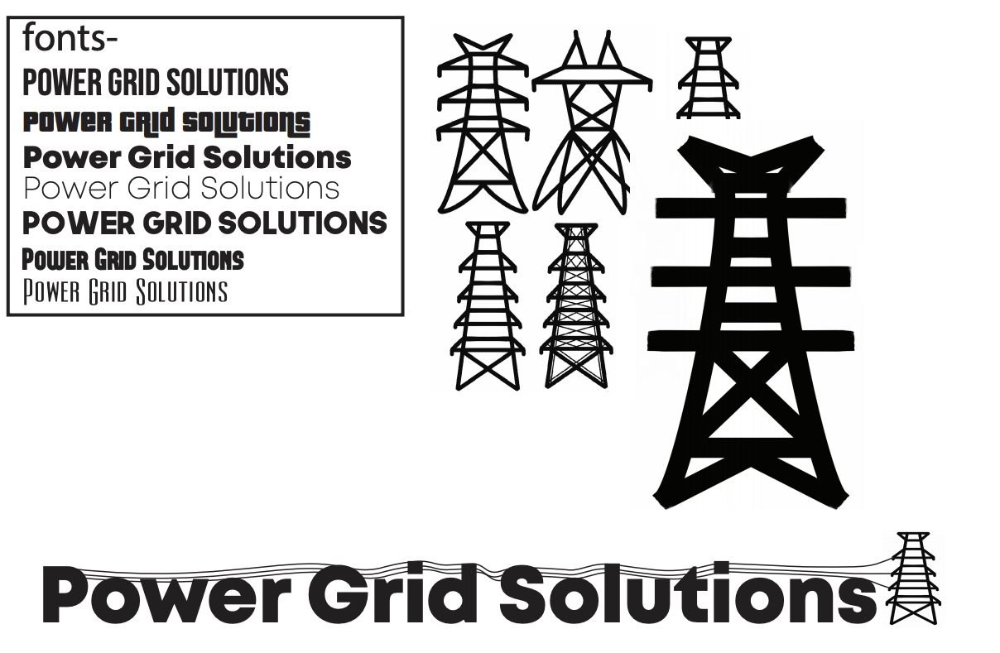

GRAPHIC DESIGN
POWER GRID SOLUTIONS LOGO

To go through the process of creating a logo for any comapny, I play with different font, layout, design ideas on illustrator. Through talking with the company, we were able to centerin on the three right logos. Then I went through color ideas, working with the ideas of the company, and we landed on this final design below me which uses a blue and green color pallete.
BLOOM APP DESIGN
This is a piece I did for my senior AP design class. I went through the process of creating a color scheme, a sketch of how the pages would flow into each other, and then I mocked up five specific pages> The final part of my project was to create an advertising poster showcasing the app for a commercial lense. This specific app design is a health app that focuses on all aspects of health: mental, physical, and emotional.


BRAND DESIGN
This was another project I did in a class of mine. Our objective was to create a fictional brand, design the logo, company objective, color schemes, slogan, and all the other design standards for that company. The company I designed was for a lamp I made which you could find here. This is one of my favorite project's I have done because it allowed me to play with my favorite color schemes and my own aesthetic.